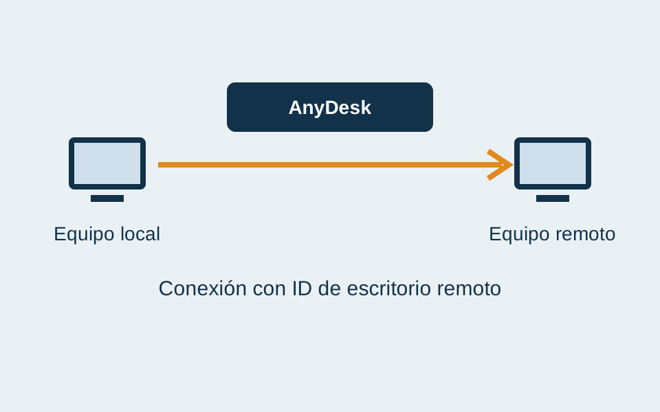
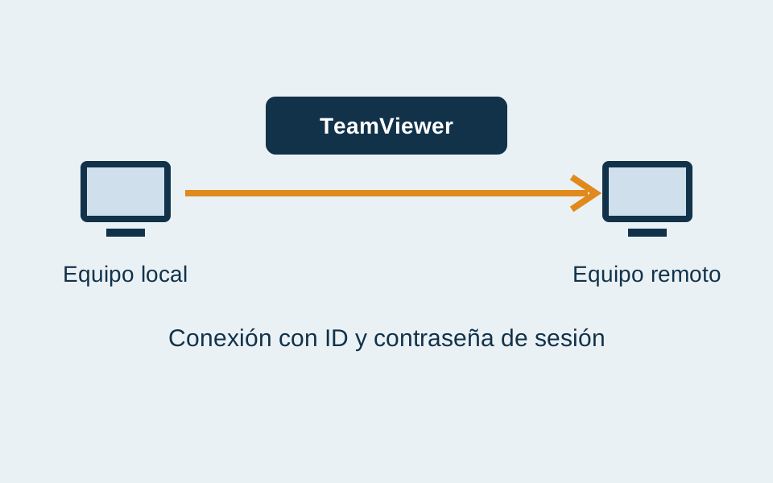

Conexión remota
Herramientas para controlar un equipo a distancia, útiles en soporte técnico y administración de servidores y estaciones de trabajo.
AnyDesk
Software de escritorio remoto que permite ver y controlar otro equipo desde cualquier lugar. Cada equipo tiene un identificador, y la conexión se acepta desde el equipo remoto o con una contraseña de acceso desatendido. Se destaca por su baja latencia y su tamaño reducido.

TeamViewer
Herramienta de acceso y soporte remoto que permite compartir pantalla, controlar equipos, transferir archivos y realizar reuniones en línea. La sesión se establece con un ID y una contraseña temporal, y funciona en computadores y dispositivos móviles.
